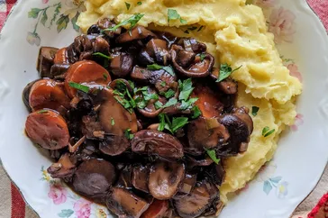

French Mushroom Stew
Return Home

Description
n this recipe, mushrooms are simmered with onions, wine, and carrots, making for a rich, French-style mushroom stew. Serve it with egg noodles, polenta, or mashed potatoes.
Ingredients
- 2 tablespoons olive oil
- 1 large onion, chopped
- 2 cloves garlic, minced
- 1 pound cremini or white mushrooms, sliced
- 2 large carrots, sliced
- 1 cup vegetable broth
- 1 cup dry white wine
- 1 teaspoon dried thyme
- Salt and pepper to taste
- 2 tablespoons chopped fresh parsley (optional)
Steps
- Heat olive oil in a large pot over medium heat. Add chopped onion and cook until translucent, about 5 minutes. Add minced garlic and cook for another minute.
- Add sliced mushrooms and carrots to the pot. Cook until the mushrooms release their moisture and start to brown, about 10 minutes.
- Pour in vegetable broth and white wine. Stir in dried thyme, salt, and pepper. Bring to a boil, then reduce heat and let simmer for 20-25 minutes, or until the carrots are tender and the stew has thickened slightly.
- Adjust seasoning if needed. Garnish with chopped fresh parsley before serving, if desired. Enjoy!